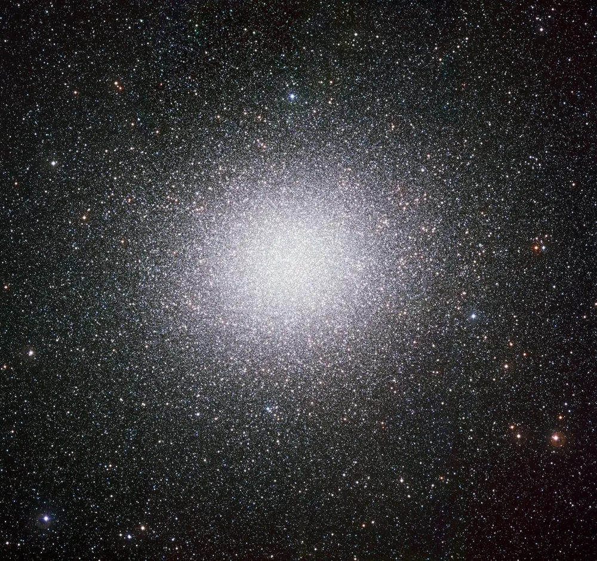
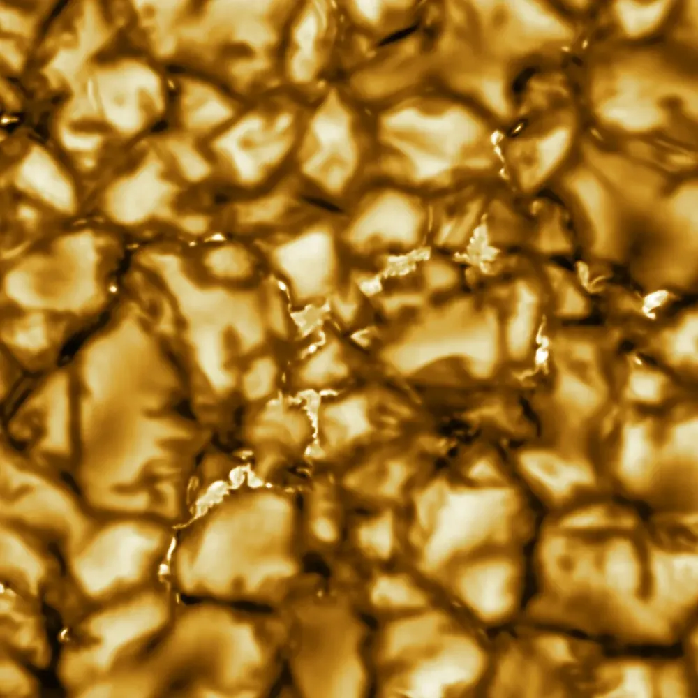

← StarsतारेEstrellasEstrelasÉtoilesالنجوم
Star colours and sizesतारों के रंग और आकारColores y tamaños de las estrellasCores e tamanhos das estrelasCouleurs et tailles des étoilesألوان النجوم وأحجامها
Look closely at the night sky: stars are not all white.रात के आसमान को ध्यान से देखिए: सारे तारे सफ़ेद नहीं हैं।Mira con atención el cielo nocturno: no todas las estrellas son blancas.Olhe com atenção o céu noturno: nem todas as estrelas são brancas.Regardez bien le ciel nocturne : toutes les étoiles ne sont pas blanches.انظر جيدًا إلى سماء الليل: ليست كل النجوم بيضاء.

📷 ESO · CC BY 4.0

📷 NSO/NSF/AURA · CC BY 4.0
Colour tells temperatureरंग तापमान बताता हैEl color indica la temperaturaA cor indica a temperaturaLa couleur indique la températureاللون يدل على الحرارة
Like a piece of iron in a fire, a star glows red when it is cooler and turns white, then blue, as it gets hotter. Betelgeuse looks orange-red at about 3,600 K; Rigel looks blue-white at about 12,000 K. The Sun, at about 5,800 K, gives out most light in the green-yellow, but together its colours look white from space.आग में लोहे के टुकड़े की तरह, तारा ठंडा हो तो लाल चमकता है और गर्म होने पर सफ़ेद, फिर नीला हो जाता है। आर्द्रा (Betelgeuse) लगभग 3,600 K पर नारंगी-लाल दिखता है; Rigel लगभग 12,000 K पर नीला-सफ़ेद। सूर्य, लगभग 5,800 K पर, सबसे ज़्यादा रोशनी हरे-पीले में देता है, पर अंतरिक्ष से उसके सारे रंग मिलकर सफ़ेद दिखते हैं।
| Classवर्गClaseClasseClasseالفئة | Surface temperatureसतह का तापमानTemperatura superficialTemperatura da superfícieTempérature de surfaceحرارة السطح | ColourरंगColorCorCouleurاللون |
|---|---|---|
| O | over 30,000 K30,000 K से ज़्यादा | Blue, hottestनीला, सबसे गर्मAzul, la más calienteAzul, a mais quenteBleue, la plus chaudeأزرق، الأشد حرارة |
| B | 10,000–30,000 K10,000–30,000 K | Blue-whiteनीला-सफ़ेदBlanco azuladoBranco-azuladoBleu-blancأبيض مزرق |
| A | 7,500–10,000 K7,500–10,000 K | Whiteसफ़ेदBlancoBrancoBlancأبيض |
| F | 6,000–7,500 K6,000–7,500 K | Yellow-whiteपीला-सफ़ेदBlanco amarillentoBranco-amareladoJaune-blancأبيض مصفر |
| G | 5,200–6,000 K5,200–6,000 K | Yellow, like the Sunपीला, सूर्य जैसाAmarillo, como el SolAmarelo, como o SolJaune, comme le Soleilأصفر، مثل الشمس |
| K | 3,700–5,200 K3,700–5,200 K | OrangeनारंगीNaranjaLaranjaOrangeبرتقالي |
| M | 2,400–3,700 K2,400–3,700 K | Red, coolestलाल, सबसे ठंडाRojo, la más fríaVermelho, a mais friaRouge, la plus froideأحمر، الأبرد |
Astronomers remember the order O B A F G K M with the phrase "Oh Be A Fine Girl/Guy, Kiss Me". The Sun is a G star.खगोलविद O B A F G K M का क्रम "Oh Be A Fine Girl/Guy, Kiss Me" वाक्य से याद रखते हैं। सूर्य एक G तारा है।
The HR diagramHR diagramEl diagrama HRO diagrama HRLe diagramme HRمخطط HR
Around 1910, Ejnar Hertzsprung and Henry Norris Russell plotted stars by temperature and brightness and found they are not scattered randomly. Most fall on a band, the main sequence. Giants and supergiants sit above it, white dwarfs below. Tap a star to learn about it.लगभग 1910 में Ejnar Hertzsprung और Henry Norris Russell ने तारों को तापमान और चमक के हिसाब से बनाया और पाया कि वे बेतरतीब नहीं बिखरे। ज़्यादातर एक पट्टी पर हैं, main sequence। दानव और महादानव उसके ऊपर हैं, white dwarfs नीचे। किसी तारे पर tap कीजिए और उसके बारे में जानिए।
How big can a star be?तारा कितना बड़ा हो सकता है?¿Qué tamaño puede tener una estrella?Qual o tamanho máximo de uma estrela?Quelle taille peut avoir une étoile ?ما أكبر حجم يمكن أن يبلغه نجم؟
Stars range from red dwarfs a little bigger than Jupiter to red supergiants that would swallow the orbit of Mars or even Jupiter. Here are real stars drawn to scale.तारे बृहस्पति से थोड़े बड़े लाल बौनों से लेकर ऐसे लाल महादानवों तक हैं जो मंगल या बृहस्पति की कक्षा तक को निगल लें। ये असली तारे सही अनुपात में बने हैं।